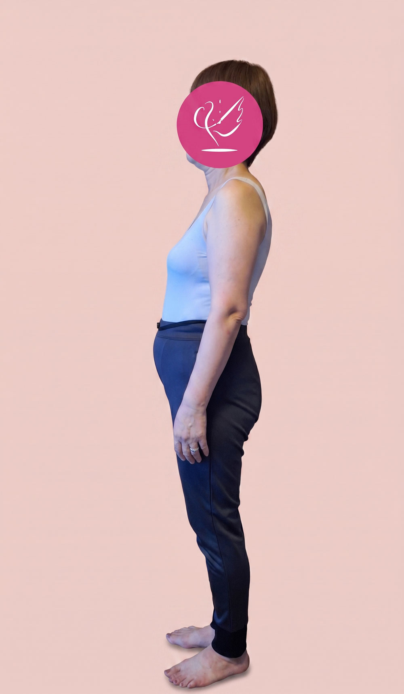
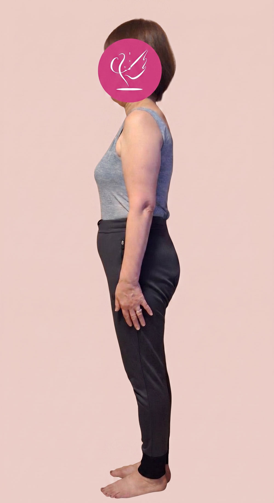
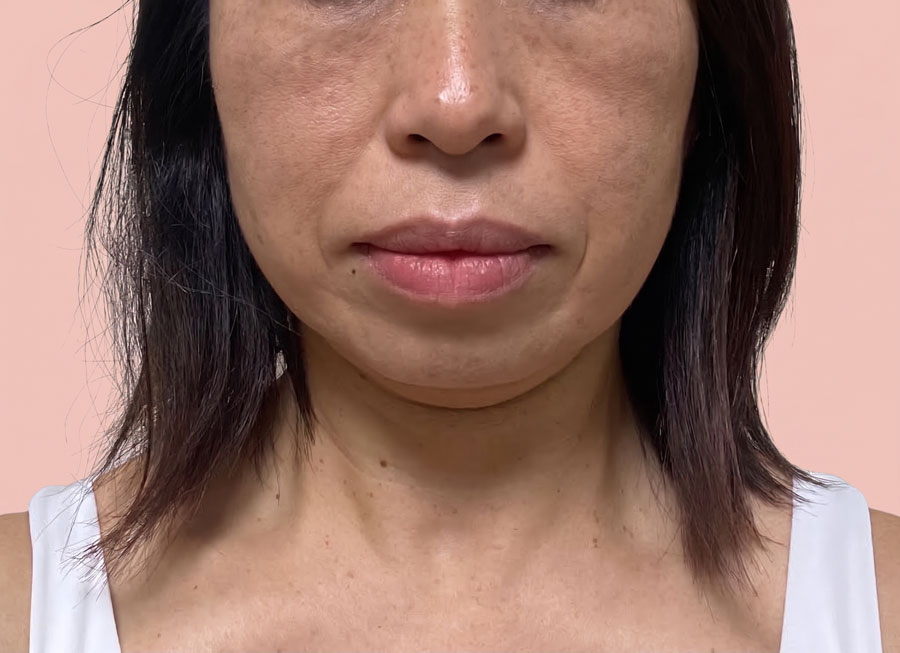
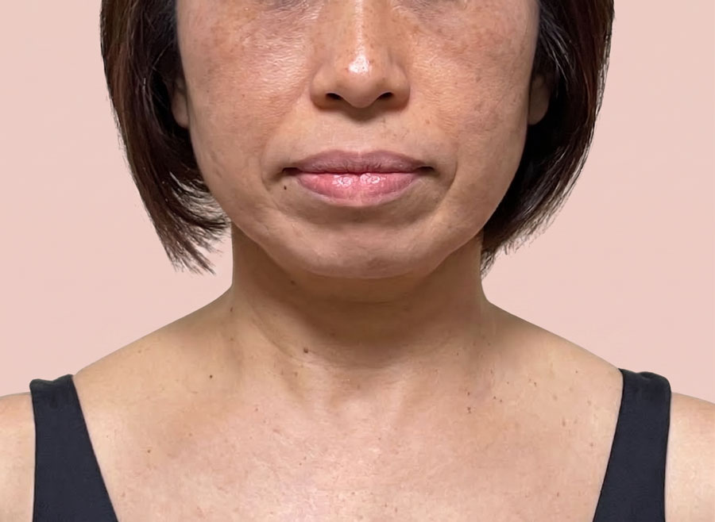
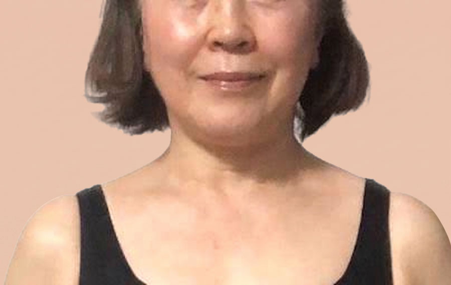
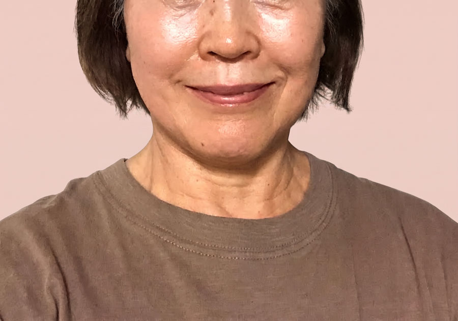
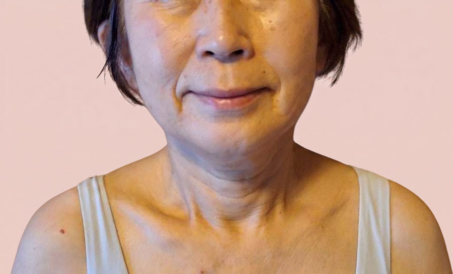
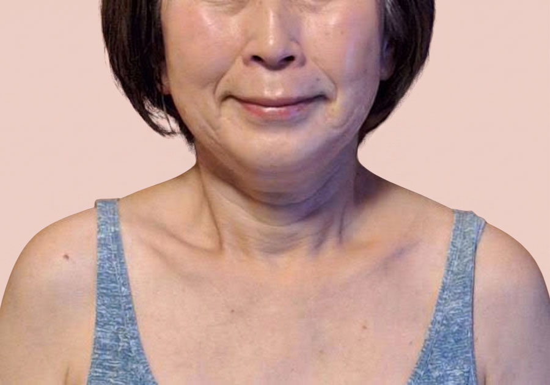

TOKIMEKI BI-BODY
何歳からでも、
自分らしく輝ける毎日へ
がんばりすぎず、心地よく。
身体・美容・食・習慣を整えながら、
これからの人生をもっと軽やかに楽しむための
セルフケアをお伝えします。
こんなお悩みありませんか？
-
朝起きても、すっきりしない日が
増えた -
鏡を見るたびに、年齢による
変化が気になる -
猫背やぽっこりお腹など、姿勢の
崩れが気になる -
以前より体力が落ち、外出が
おっくうになった -
膝や腰、股関節などに不安を
感じている -
顔のたるみやほうれい線、表情の
変化が気になる -
旅行や趣味をもっと元気に
楽しみたい -
年齢を理由に、やりたいことを
諦めたくない
これからの自分のために、
身体と向き合う時間を
始めてみませんか。
Service
身体から、人生を整える4つのステップ美BODY90
身体の土台や姿勢、呼吸、食事、生活習慣を学び、自分自身で身体を整える習慣を身につけます。
美FACE30
顔だけにアプローチするのではなく、姿勢や身体全体から整え、自然でいきいきとした表情を目指します。
美BODY
アカデミー
自分自身が学び、体験してきたセルフ整体を、今度は誰かに伝えるための知識と指導力を育てます。
美BODY
クラブ
講座を終えたあとも、仲間と学び、実践を続けられるコミュニティ。年齢やライフスタイルの変化に合わせて、自分の身体と向き合い続けます。
Before / After
ビフォーアフター

姿勢を整えることで、猫背やお腹まわりのお悩みにアプローチ。
バストやヒップラインまで、女性らしい美しいボディラインへ。


顎まわりのもたつきがすっきりし、フェイスラインの変化を実感。
周囲から「何をしているの？」と聞かれるほどの変化を感じられました。
フェイスラインがすっきりし、小顔印象へ。
顎まわりや頬の位置に変化を感じ、顔全体のバランスが整いました。


フェイスラインがすっきり整い、Vラインのような印象へ。
頬や口角も上向きの明るい表情に。


首の傾きが整い、フェイスラインもすっきり。
口角が上がり、自然な笑顔が増えました。
とくもと えり
子どもの頃から身体が弱く、病院へ通うことが日常だった経験から、食や健康について学び始めました。
その後、パン教室や料理教室、そば打ち教室などを約25年間続け、多くの方の食と健康に携わってきました。
自身も年齢とともに身体の変化を感じる中でセルフ整体と出会い、64歳から本格的に学び始めます。
毎日少しずつ身体と向き合ううちに、姿勢や呼吸、日々の過ごし方への意識にも変化が生まれました。
現在68歳。海外への一人旅や新しい挑戦を楽しみながら、自身の経験を活かして、女性が何歳からでも自分らしい人生を楽しむためのサポートを行っています。